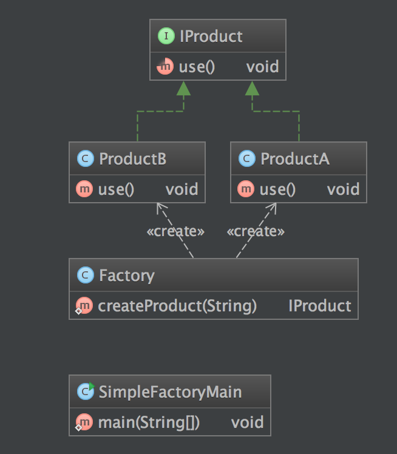

定义
简单工厂模式(Simple Factory Pattern)：又称为静态工厂方法(Static Factory Method)模式，它属于类创建型模式。在简单工厂模式中，可以根据参数的不同返回不同类的实例。简单工厂模式专门定义一个类来负责创建其他类的实例，被创建的实例通常都具有共同的父类。
使用场景
- 工厂类负责创建的对象比较少：由于创建的对象较少，不会造成工厂方法中的业务逻辑太过复杂。
- 客户端只知道传入工厂类的参数，对于如何创建对象不关心：客户端既不需要关心创建细节，甚至连类名都不需要记住，只需要知道类型所对应的参数。
UML 图
Factory：工厂角色
工厂角色负责实现创建所有实例的内部逻辑
Product：抽象产品角色
抽象产品角色是所创建的所有对象的父类，负责描述所有实例所共有的公共接口
ConcreteProduct：具体产品角色
具体产品角色是创建目标，所有创建的对象都充当这个角色的某个具体类的实例。
简单实现
步骤
- 定义 Product 抽象类 或者接口
- 实现具体Product
- 实现 Factory ，根据传入的参数，创造不同的对象
- 客户端调用Factory构造需要的对象
例子
public class ProductB implements IProduct {
@Override
public void use() {
System.out.println("ProductB use");
}
}
public class ProductA implements IProduct {
@Override
public void use() {
System.out.println("ProductA use");
}
}
public class ProductB implements IProduct {
@Override
public void use() {
System.out.println("ProductB use");
}
}
public class Factory {
public static IProduct createProduct(String type) {
if (type.equals("A")) {
return new ProductA();
}else if (type.equals("B")){
return new ProductB();
}
return null;
}
}
客户端调用
public class SimpleFactoryMain {
public static void main(String[] args) {
System.out.println("SimpleFactoryMain RUNNING");
IProduct product = Factory.createProduct("A");
product.use();
product = Factory.createProduct("B");
product.use();
}
}
结果
SimpleFactoryMain RUNNING
ProductA use
ProductB use
类图

优缺点
- 优点
- 工厂类含有必要的判断逻辑，可以决定在什么时候创建哪一个产品类的实例，客户端可以免除直接创建产品对象的责任，而仅仅“消费”产品；简单工厂模式通过这种做法实现了对责任的分割，它提供了专门的工厂类用于创建对象。
- 客户端无须知道所创建的具体产品类的类名，只需要知道具体产品类所对应的参数即可，对于一些复杂的类名，通过简单工厂模式可以减少使用者的记忆量。
- 通过引入配置文件，可以在不修改任何客户端代码的情况下更换和增加新的具体产品类，在一定程度上提高了系统的灵活性。
- 缺点
- 由于工厂类集中了所有产品创建逻辑，一旦不能正常工作，整个系统都要受到影响。
- 使用简单工厂模式将会增加系统中类的个数，在一定程序上增加了系统的复杂度和理解难度。
- 系统扩展困难，一旦添加新产品就不得不修改工厂逻辑，在产品类型较多时，有可能造成工厂逻辑过于复杂，不利于系统的扩展和维护。
- 简单工厂模式由于使用了静态工厂方法，造成工厂角色无法形成基于继承的等级结构。
总结
- 创建型模式对类的实例化过程进行了抽象，能够将对象的创建与对象的使用过程分离。
- 简单工厂模式又称为静态工厂方法模式，它属于类创建型模式。在简单工厂模式中，可以根据参数的不同返回不同类的实例。简单工厂模式专门定义一个类来负责创建其他类的实例，被创建的实例通常都具有共同的父类。
- 简单工厂模式包含三个角色：工厂角色负责实现创建所有实例的内部逻辑；抽象产品角色是所创建的所有对象的父类，负责描述所有实例所共有的公共接口；具体产品角色是创建目标，所有创建的对象都充当这个角色的某个具体类的实例。
- 简单工厂模式的要点在于：当你需要什么，只需要传入一个正确的参数，就可以获取你所需要的对象，而无须知道其创建细节。
- 简单工厂模式最大的优点在于实现对象的创建和对象的使用分离，将对象的创建交给专门的工厂类负责，但是其最大的缺点在于工厂类不够灵活，增加新的具体产品需要修改工厂类的判断逻辑代码，而且产品较多时，工厂方法代码将会非常复杂。
- 简单工厂模式适用情况包括：工厂类负责创建的对象比较少；客户端只知道传入工厂类的参数，对于如何创建对象不关心。
## 参考
> http://design-patterns.readthedocs.org/zh_CN/latest/creational_patterns/simple_factory.html
> https://sourcemaking.com/design_patterns/decorator
> 『head first 设计模式』